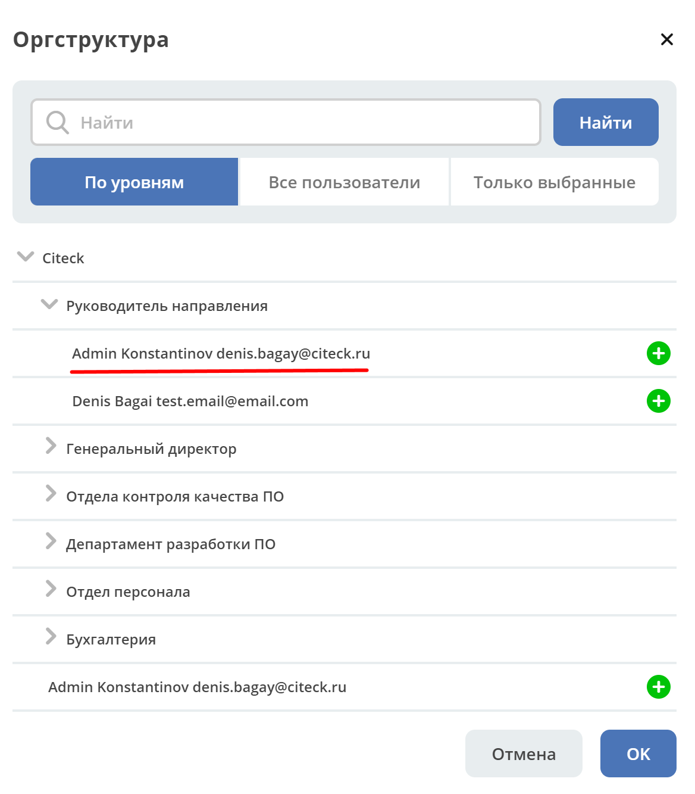

Организационная структура
Страница оргструктуры
В системе предусмотрен функционал формирования организационной структуры компании.
Организационная структура – система иерархически упорядоченных организационных единиц (должностей, отделов, подразделений).
Для управления оргструктурой необходимо выбрать в главном меню пункт:
{kind=link}
Форма оргструктуры разделена на две части и содержит:
иерархическое дерево структуры с возможностью поиска (1),
дашборд с информацией о выбранной части структуры (2).
Каждый элемент структуры имеет кнопки управления, которые отображаются при наведении на элемент.
Для пользователей:
{kind=link}
{kind=link}
{kind=link}
{kind=link}
{kind=link}
Для групп:
{kind=link}
Редактировать группу
Внести изменения и сохранить.
|
|
Добавить подгруппу
Внести данные и сохранить.
|
|
Добавить человека в группу
Внести данные и сохранить.
|
{kind=link}
{kind=link}
{kind=link}
{kind=link}
{kind=link}
{kind=link}
Компонент Оргструктура
Компонент используется для выбора сотрудников и групп в формах документов, бизнес-процессов и т.д.
{kind=link}
По умолчанию Оргструктура представлена в виде иерархии по уровням. Выбор сотрудника осуществляется нажатием на:
{kind=link}
Все пользователи списком:
{kind=link}
Неактивные пользователи отмечены более светлым оттенком серого.
Только выбранные ранее:
{kind=link}
Конфигурация компонента оргструктуры
Изменение маски вывода данных пользователя
Маску для отображения информации о пользователе можно изменить. Перейдите в журнал «Конфигурация ECOS», откройте идентификатор orgstruct-username-mask в режиме редактирования:
{kind=link}
Укажите маску, например, ${firstName} ${lastName} ${email} и сохраните:

Измененный вывод данных пользователя в компоненте Оргструктура:
{kind=link}
Добавлена возможность в конфигурации маски отображения пользователей в компоненте оргструктура использовать код HTML.
Пример с использованием кода HTML. Маска:
${firstName} ${lastName} <span style=»color: #7396cd;font-size:bold;»><a href=»https://ecos-community-demo/v2/orgstructure?recordRef=emodel/person@${fullName}» ><b>(${fullName})</b></a></span>

По клику на ссылку в отдельной вкладке открывается страница профиля пользователя.
Где найти атрибуты для маски
Перейти в Типы данных, в настройках выставить отображение системных типов.
Открыть тип Person, перейти в атрибуты:
{kind=link}
Скрывать пользователей/ группы при поиске в оргструктуре
Перейдите в журнал «Конфигурация ECOS», откройте идентификатор hide-in-orgstruct в режиме редактирования:
{kind=link}
Укажите логины пользователей, например, ivanov_ii,petrov_vv и сохраните:
{kind=link}
Поиск пользователя в компоненте Оргструктура:
{kind=link}